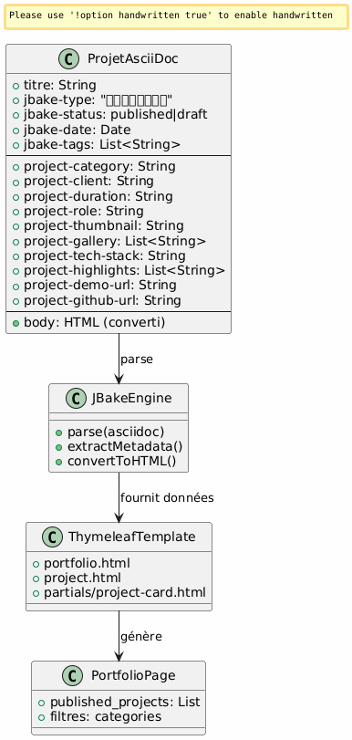
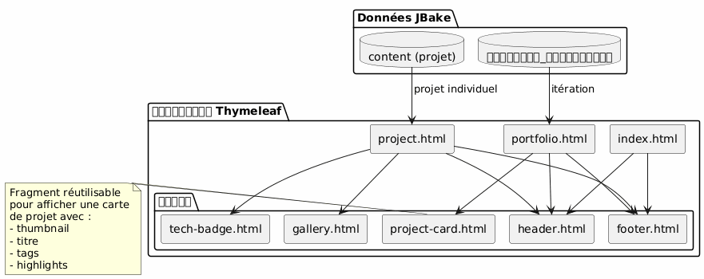
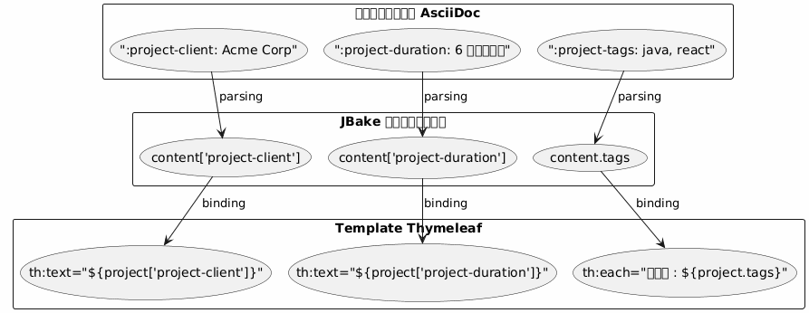
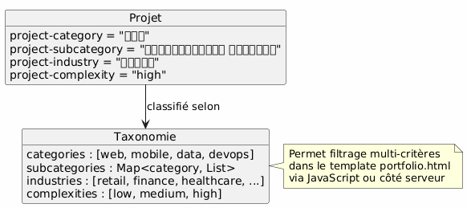

आर्किटेक्चर पोर्टफोलियो JBake - दृष्टि और उपयोग के मामले
Publié le 15 January 2026
आर्किटेक्चरल विज़न
निर्देशक सिद्धांत
आर्किटेक्चर विचारों के पृथक्करण के सिद्धांत पर आधारित है :
-
sagri : एससीआईडॉक्स फ़ाइलें संरचित मेटाडेटा के साथ
-
प्रस्तुति : templates Thymeleaf पुन: उपयोग करने योग्य
-
डेटा" : JBake द्वारा AsciiDoc属性 से स्वचालित रूप से निकाला गया मॉडल
-
शैली : Bootstrap 5 को दृश्यात्मक सुसंगतता के लिए
रणनीतिक विकल्प: पोर्टफोलियो के लिए AsciiDoc
क्यों AsciiDoc ?
| मापदंड | लाभ |
|---|---|
संगति |
Même format que les articles de blog |
मेटाडेटा |
संरचित और विस्तारयोग्य गुण ( |
रखरखावयोग्यता |
सरल टेक्स्ट संपादन, Git-संस्करणीय |
लचीलापन |
इसमें समृद्ध सामग्री (तालिकाएँ, कोड, छवियाँ) हो सकती है |
टेम्प्लेटिंग |
JBake स्वचालित रूप से Thymeleaf के लिए अट्रिब्यूट निकालता है |
डेटा मॉडल
हर पोर्टफ़ोलियो प्रोजेक्ट एक AsciiDoc दस्तावेज़ है, जिसके साथ :
-
शीर्षक मेटाडेटा : संरचित जानकारी (ग्राहक, अवधि, प्रौद्योगिकियाँ, आदि)
-
दस्तावेज़ का शरीर : कथात्मक विवरण, चुनौतियाँ, समाधान, परिणाम
-
वैयक्तिकृत विशेषताएँ: पूर्वसंयोजित`project-*`स्वचालित निष्कर्षण के लिए

विस्तृत उपयोग केस
UC1 : एक आइटम पोर्टफोलियो में जोड़ें
नॉमिनल फ़्लक्स
Failed to generate image: PlantUML preprocessing failed: [From <input> (line 5) ] @startuml skinparam backgroundColor #FEFEFE actor Développeur as dev participant "संपादक\nपाठ" as editor participant "फ़ाइल ^^^^^ Syntax Error? (Assumed diagram type: sequence) @startuml skinparam backgroundColor #FEFEFE actor Développeur as dev participant "संपादक\nपाठ" as editor participant "फ़ाइल AsciiDoc" as file participant "JBake इंजन" as jbake participant "साइट\nस्थैतिक" as site dev -> editor : Créer nouveau fichier activate editor editor -> file : portfolio/nouveau-projet.adoc activate file dev -> editor : Rédiger en-tête avec métadonnées\n(titre, type=project, status=published,\nattributs project-*) dev -> editor : Rédiger contenu narratif\n(contexte, défis, solutions) dev -> editor : Ajouter images dans assets/img/portfolio/ editor -> file : Sauvegarder deactivate editor dev -> jbake : Lancer build (jbake -b) activate jbake jbake -> file : Lire et parser jbake -> jbake : Extraire métadonnées jbake -> jbake : Convertir AsciiDoc → HTML jbake -> jbake : Appliquer template project.html jbake -> jbake : Ajouter à la liste portfolio.html jbake -> site : Générer pages statiques deactivate jbake dev -> site : Vérifier résultat activate site site --> dev : Afficher projet deactivate site @enduml
बनाने के लिए फ़ाइल का टेम्प्लेट
डेवलपर बनाता है`content/portfolio/nom-projet.adoc`एक मानकीकृत संरचना के साथ :
-
सभी आवश्यक विशेषताओं के साथ शीर्ष
-
मानकीकृत अनुभाग (संदर्भ, चुनौतियाँ, समाधान, परिणाम)
-
छवियों की सुसंगत नामावली
सत्यापन अंक
-
अनिवार्य विशेषताएँ मौजूद हैं (
jbake-type,jbake-status,project-thumbnail) -
संदर्भित छवियाँ हैं`assets/img/portfolio/`
-
JBake बिल्ड त्रुटि के बिना सफलतापूर्वक होता है
-
प्रोजेक्ट पोर्टफ़ोलियो पृष्ठ पर दिखाई देता है
-
प्रोजेक्ट का व्यक्तिगत पृष्ठ सही ढंग से प्रदर्शित होता है
UC2 : पोर्टफ़ोलियो से एक आइटम हटाएँ
नाममात्र प्रवाह
Failed to generate image: PlantUML preprocessing failed: [From <input> (line 4) ] @startuml skinparam backgroundColor #FEFEFE actor Développeur as dev participant "प्रणाली ^^^^^ Syntax Error? (Assumed diagram type: sequence) @startuml skinparam backgroundColor #FEFEFE actor Développeur as dev participant "प्रणाली फ़ाइलें" as fs participant "JBake इंजन" as jbake participant "साइट\nस्थिर" as site database "कैश JBake" as cache dev -> fs : Supprimer portfolio/projet-ancien.adoc activate fs fs --> dev : Fichier supprimé deactivate fs dev -> fs : (Optionnel) Supprimer images associées\nassets/img/portfolio/projet-ancien-* activate fs fs --> dev : Images supprimées deactivate fs dev -> cache : Nettoyer cache JBake activate cache cache --> dev : Cache vidé deactivate cache dev -> jbake : Rebuild complet (jbake -b) activate jbake jbake -> jbake : Scanner content/portfolio/ jbake -> jbake : Projet absent → non généré jbake -> jbake : Régénérer portfolio.html\n(sans le projet supprimé) jbake -> site : Déployer nouveau build deactivate jbake dev -> site : Vérifier activate site site --> dev : Projet absent de la liste deactivate site @enduml
वैकल्पिक रणनीति : अभिलेखागार
स्थायी रूप से हटाने के बजाय, एक फ़ोल्डर बनाने की संभावना`content/portfolio/archive/`(No output)
-
फ़ाइल को हटाने की बजाय इसे ले जाएँ
-
आसानी से बहाल करने की अनुमति देता है
-
गिट का इतिहास अधिक स्पष्ट रखें
संसाधनों की सफाई
-
जाँच करें अनाथ छवियों में`assets/img/portfolio/`
-
अन्य परियोजनाओं द्वारा संदर्भित नहीं की गई छवियों को हटाएँ
-
JBake का कैश साफ़ करें ताकि भूतिया संदर्भों से बचा जा सके
UC3 : अप्रकाशित (draft) में रखें
सामान्य फ़्लक्स
Failed to generate image: PlantUML preprocessing failed: [From <input> (line 5) ] @startuml skinparam backgroundColor #FEFEFE actor Développeur as dev participant "फ़ाइल\nAsciiDoc" as file participant "JBake ^^^^^ Syntax Error? (Assumed diagram type: sequence) @startuml skinparam backgroundColor #FEFEFE actor Développeur as dev participant "फ़ाइल\nAsciiDoc" as file participant "JBake इंजन" as jbake participant "साइट स्थैतिक" as site dev -> file : Ouvrir portfolio/projet.adoc activate file dev -> file : Modifier attribut\n:jbake-status: published\n↓\n:jbake-status: draft file --> dev : Sauvegardé deactivate file dev -> jbake : Rebuild (jbake -b) activate jbake jbake -> file : Parser le fichier jbake -> jbake : Détecter status=draft jbake -> jbake : Exclure de published_projects jbake -> jbake : Ne pas créer page publique note right Le projet existe toujours mais n'est pas publié end note jbake -> site : Générer site (sans ce projet) deactivate jbake dev -> site : Vérifier portfolio activate site site --> dev : Projet absent de la liste publique deactivate site @enduml
संभावित स्थितियाँ

सामान्य उपयोग केस
-
लेखनाधीन प्रोजेक्ट : ड्राफ्ट बनाएं, जब तैयार हो तब प्रकाशित करें
-
अस्थायी रूप से गोपनीय परियोजना : ग्राहक समझौते के दौरान ड्राफ्ट में रखें
-
महत्वपूर्ण अपडेट : ड्राफ्ट में जाना, संपादित करना, फिर से प्रकाशित करना
-
A/B testing : ड्राफ्ट में डुप्लिकेट करें, परीक्षण करें, सर्वोत्तम संस्करण प्रकाशित करें
टेम्प्लेटिंग वास्तुकला
पुन: प्रयोज्य टेम्प्लेट्स की रणनीति

डेटा निष्कर्षण पैटर्न
JBake AsciiDoc विशेषताओं को Thymeleaf में सुलभ संपत्तियों में स्वचालित रूप से परिवर्तित करता है :

नामकरण नियम
-
परियोजना गुण : प्रीफ़िक्स`project-*` (ex:
project-client,project-tech-stack) -
फ़ाइलें : kebab-case (उदाहरण:`ecommerce-platform.adoc`)
-
छवियाँ : प्रीफ़िक्स परियोजना का नाम (उदाहरण:`ecommerce-platform-thumb.jpg`)
-
Templates : कार्यात्मक नाम (उदाहरण:`project-card.html`,
tech-badge.html)
प्रकाशन वर्कफ़्लो
विकास पाइपलाइन

पर्यावरणों
| पर्यावरण | उपयोग | स्वीकृत स्थिति |
|---|---|---|
Local |
विकास और पूर्वावलोकन |
ड्राफ्ट, प्रकाशित |
स्टेजिंग |
पूर्व-उत्पादन सत्यापन |
केवल प्रकाशित |
उत्पादन |
सार्वजनिक साइट |
published केवल |
विस्तारनीयता
नए विशेषताओं का जोड़
डेटा मॉडल को समृद्ध करने के लिए, सरलता से नए प्रीफ़िक्स वाले विशेषताएँ जोड़ें`project-*`:
-
project-awards: पुरस्कार और सम्मान -
`project-testimonial`ग्राहक उद्धरण
-
project-team-size: टीम का आकार -
project-budget-range: बजट सीमा
ये विशेषताएँ जेएबेक इंजन को संशोधित किए बिना टेम्प्लेट्स में स्वचालित रूप से उपलब्ध हो जाती हैं।
उन्नत वर्गीकरण

अच्छे अभ्यास
फ़ाइलों का संगठन
-
एक फ़ाइल = एक परियोजना : कई परियोजनाओं को मिलाने से बचें
-
विशेष फ़ोल्डर में छवियाँ :`assets/img/portfolio/nom-projet/`
-
सुसंगत नामावली : खोज और रखरखाव को आसान बनाता है
-
Versioning Git : संपूर्ण परिवर्तन ट्रैकिंग
सामग्री प्रबंधन
-
डिफ़ॉल्ट ड्राफ़्ट स्थिति : केवल तभी प्रकाशित करें जब तैयार हों
-
प्रकाशन से पहले समीक्षा : गुणवत्ता और गोपनीयता की पुष्टि
-
सम्पूर्ण मेटाडेटा : सभी संबंधित फ़ील्ड भरें
-
समृद्ध कथा सामग्री : मेटाडेटा तक सीमित न रहें
प्रदर्शन
-
छवियों को अनुकूलित करें : कमिट से पहले संपीड़न
-
yदि आवश्यक हो तो पेज़िनेशन : यदि >20 परियोजनाएँ
-
Lazy loading : गैलरी की छवियों को आवश्यकतानुसार लोड किया जाता है
-
ब्राउज़र कैश : एसेट्स के लिए उपयुक्त हेडर
निष्कर्ष
यह वास्तुकला अनुमति देती है:
-
उपयोग में आसानी : एक परियोजना जोड़ें = एक टेक्स्ट फ़ाइल बनाएँ
-
लचीलापन : विस्तारयोग्य नई विशेषताओं के माध्यम से
-
धारणीयता : सामग्री/प्रस्तुति का पृथक्करण
-
ट्रेसबिलिटी : Git का पूर्ण संस्करणन
-
स्वचालन : लगातार बनाना और तैनाती संभव
AsciiDoc का चयन साइट के बाकी हिस्से के साथ सुसंगतता सुनिश्चित करता है, साथ ही एक पेशेवर पोर्टफ़ोलियो के लिए आवश्यक मेटाडेटा की समृद्धि प्रदान करता है।